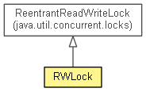

org.eclipse.net4j.util.concurrent
Class RWLock
java.lang.Object
 java.util.concurrent.locks.ReentrantReadWriteLock
org.eclipse.net4j.util.concurrent.RWLock
java.util.concurrent.locks.ReentrantReadWriteLock
org.eclipse.net4j.util.concurrent.RWLock
- All Implemented Interfaces:
- Serializable, ReadWriteLock
- public class RWLock
- extends ReentrantReadWriteLock

- See Also:
- Serialized Form
|
Constructor Summary |
RWLock(long timeoutMillis)
|
RWLock(long timeoutMillis,
boolean fair)
|
| Methods inherited from class java.util.concurrent.locks.ReentrantReadWriteLock |
getOwner, getQueuedReaderThreads, getQueuedThreads, getQueuedWriterThreads, getQueueLength, getReadHoldCount, getReadLockCount, getWaitingThreads, getWaitQueueLength, getWriteHoldCount, hasQueuedThread, hasQueuedThreads, hasWaiters, isFair, isWriteLocked, isWriteLockedByCurrentThread, readLock, toString, writeLock |
RWLock
public RWLock(long timeoutMillis)
RWLock
public RWLock(long timeoutMillis,
boolean fair)
read
public <V> V read(Callable<V> callable)
read
public void read(Runnable runnable)
write
public <V> V write(Callable<V> callable)
write
public void write(Runnable runnable)
call
public static <V> V call(Callable<V> callable,
Lock lock,
long timeoutMillis)
run
public static void run(Runnable runnable,
Lock lock,
long timeoutMillis)
Copyright (c) 2011, 2012 Eike Stepper (Berlin, Germany) and others.